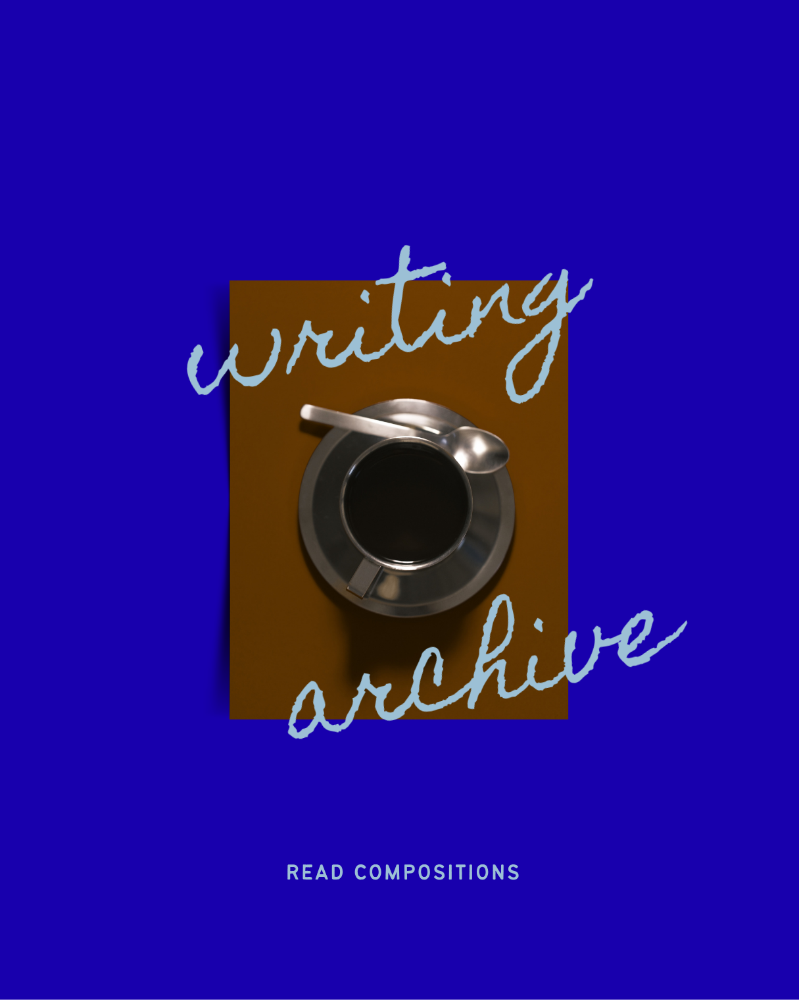

a thousand
little thoughts. ↘
little thoughts. ↘
memory,
language,
womanhood
language,
womanhood
memory,
language,
womanhood
↘
language,
womanhood
↘

ESSAYS, INTERVIEWS & PUBLICATIONS
structure,
spacing,
form.
spacing,
form.

USER EXPERIENCE, GRAPHIC DESIGN & ILLUSTRATION
a personal note:
i am an
intersection
of grids.
through words,
i collect memories.
through design,
i create experiences.